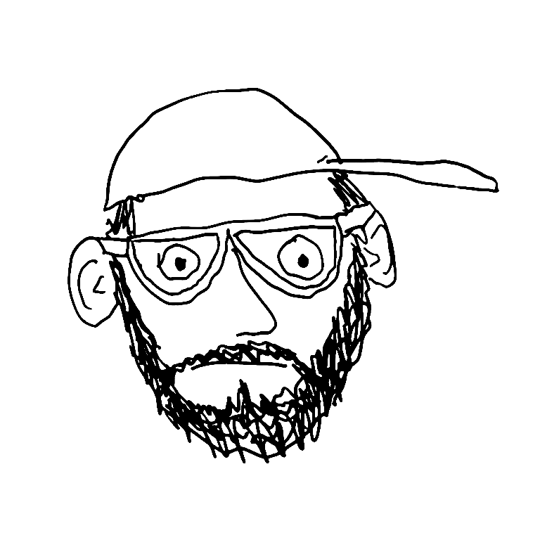

MIKE CARDARELLI
Home
Short Bio
DIY PROJECTS
Showpaper Mapped
Silo Five Font
City Henge
Playoff Pain Index
Ridgewood Sports History
Oldcore NYC
Joie de Vivek Podcast
JDV NFTs
Soccer Points Pool
Racing Points Pool
Set Times Dot Org
Punt Planet
